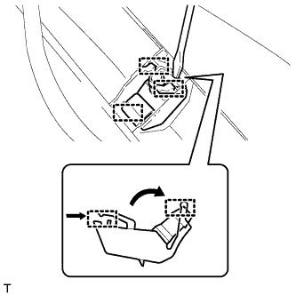

WASHER NOZZLE (for Front Side) > INSTALLATION |
| 1. INSTALL WASHER NOZZLE SUB-ASSEMBLY |
 |
Attach the 3 clamps to install the washer nozzle.
Connect the hose.
| 2. INSTALL COWL TOP VENTILATOR LOUVER SUB-ASSEMBLY |
 |
Push the ventilator louver in the direction indicated by the arrow in the illustration to attach the 17 claws and 2 clips and install the ventilator louver.
| 3. INSTALL HOOD TO COWL TOP SEAL |
 |
Attach the 12 clips and 4 clamps to install the hood to cowl top seal.
 |
Install the washer hose.
| 4. INSTALL FRONT FENDER MAIN SEAL LH |
 |
Attach the 3 clips to install the fender main seal.
| 5. INSTALL FRONT FENDER MAIN SEAL RH |
| 6. CONNECT CABLE TO NEGATIVE BATTERY TERMINAL |
| 7. INSTALL FRONT WIPER ARM LH |
 |
Stop the wiper motor at the automatic stop position.
Clean the wiper pivot serration with a wire brush.
 |
Install the wiper arm and blade with the nut. Make sure that the wiper arm and blade comes to the position shown in the illustration.
| Position | Specified Condition |
| A | 16.8 to 36.8 mm (0.661 to 1.45 in.) |
| 8. INSTALL FRONT WIPER ARM RH |
|
Stop the wiper motor at the automatic stop position.
Clean the wiper pivot serration with a wire brush.
 |
Install the wiper arm and blade with the nut. Make sure that the wiper arm and blade comes to the position shown in the illustration.
| Position | Specified Condition |
| B | 20.0 to 40.0 mm (0.787 to 1.57 in.) |
Operate the front wipers while spraying washer fluid on the windshield glass. Make sure that the front wipers function properly and there is no interference with the vehicle body.